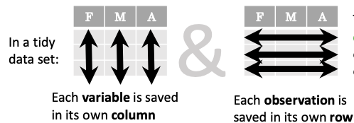

Working with Data
Questions
How do you store your data right now?
Are you doing data cleaning / preprocessing every time you load the data?
Objectives
Learn benefits/drawbacks of common data formats.
Learn how you can read and write data in a variety of formats.

Source: xkcd #2116
What is a data format?
Data format can mean two different things
data structure or how you’re storing the data in memory while you’re working on it;
file format or the way you’re storing the data in the disk.
Let’s consider this randomly generated DataFrame with various columns:
import pandas as pd
import numpy as np
n_rows = 100000
dataset = pd.DataFrame(
data={
'string': np.random.choice(('apple', 'banana', 'carrot'), size=n_rows),
'timestamp': pd.date_range("20130101", periods=n_rows, freq="s"),
'integer': np.random.choice(range(0,10), size=n_rows),
'float': np.random.uniform(size=n_rows),
},
)
dataset.info()
This DataFrame is structured in the tidy data format. In tidy data we have multiple columns of data that are collected in a Pandas DataFrame, where each column represents a value of a specific type.
Let’s consider another example:
n = 1000
data_array = np.random.uniform(size=(n,n))
np.info(data_array)
Here we have a different data structure: we have a two-dimensional array of numbers. This is different to a Pandas DataFrame as data is stored as one contiguous block instead of individual columns. This also means that the whole array must have one data type.

Source: Elegant Scipy
Now the question is: Can the data be saved to the disk without changing the data format?
For this we need a file format that can easily store our data structure.
Data type vs. data structure vs. file format
Data type: Type of a single piece of data (integer, string, float, …).
Data structure: How the data is organized in memory (individual columns, 2D-array, nested dictionaries, …).
File format: How the data is organized when it is saved to the disk (columns of strings, block of binary data, …).
For example, a black and white image stored as a .png-file (file format) might be stored in memory as an NxM array (data structure) of integers (data type) with each entry representing the color value of the pixel.
What to look for in a file format?
When deciding which file format you should use for your program, you should remember the following:
There is no file format that is good for every use case.
and
It is very likely, that a good format already exists for your use case.
There are, indeed, various standard file formats for various use cases:

Usually, you’ll want to consider the following things when choosing a file format:
Is the file format good for my data structure (is it fast/space efficient/easy to use)?
Is everybody else / leading authorities in my field recommending a certain format?
Do I need a human-readable format or is it enough to work on it using code?
Do I want to archive / share the data or do I just want to store it while I’m working?
Pandas supports many file formats for tidy data and Numpy supports some file formats for array data. However, there are many other file formats that can be used through other libraries.
Table below describes some data formats:
Name:
|
Human
readable:
|
Space
efficiency:
|
Arbitrary
data:
|
Tidy
data:
|
Array
data:
|
Long term
storage/sharing:
|
|---|---|---|---|---|---|---|
❌ |
🟨 |
✅ |
🟨 |
🟨 |
❌ |
|
✅ |
❌ |
❌ |
✅ |
🟨 |
✅ |
|
❌ |
✅ |
❌ |
✅ |
❌ |
❌ |
|
❌ |
✅ |
🟨 |
✅ |
🟨 |
✅ |
|
❌ |
🟨 |
❌ |
❌ |
✅ |
❌ |
|
❌ |
✅ |
❌ |
❌ |
✅ |
✅ |
|
❌ |
✅ |
❌ |
❌ |
✅ |
✅ |
|
✅ |
❌ |
🟨 |
❌ |
❌ |
✅ |
|
❌ |
❌ |
❌ |
🟨 |
❌ |
🟨 |
|
🟨 |
🟨 |
❌ |
❌ |
❌ |
✅ |
Important
✅ : Good
🟨 : Ok / depends on a case
❌ : Bad
A more in-depth analysis of the file formats mentioned above, can be found here.
Pros and cons
Let’s have a general look at pros and cons of some types of file formats
Binary File formats
Good things
Can represent floating point numbers with full precision.
Can potentially save lots of space, especially, when storing numbers.
Data reading and writing is usually much faster than loading from text files, since the format contains information about the data structure, and thus memory allocation can be done more efficiently.
More explicit specification for storing multiple data sets and metadata in the same file.
Many binary formats allow for partial loading of the data. This makes it possible to work with datasets that are larger than your computer’s memory.
Bad things
Commonly requires the use of a specific library to read and write the data.
Library specific formats can be version dependent.
Not human readable.
Sharing can be more difficult (requires some expertise to be able to read the data).
Might require more documentation efforts.
Textual formats
Good things
Human readable.
Easy to check for (structural) errors.
Supported by many tool out of the box.
Easily shared.
Bad things
Can be slow to read and write.
High potential to increase required disk space substantially (e.g. when storing floating point numbers as text).
Prone to losing precision when storing floating point numbers.
Multi-dimensional data can be hard to represent.
While the data format might be specified, the data structure might not be clear when starting to read the data.
Further considerations
The closer your stored data is to the code, the more likely it depends on the environment you are working in. If you
pickle, e.g. a generated model, you can only be sure that the model will work as intended if you load it in an environment that has the same versions of all libraries the model depends on.
Exercise
Exercise
You have a model that you have been training for a while. Lets assume it’s a relatively simple neural network (consisting of a network structure and it’s associated weights).
Let’s consider 2 scenarios
A: You have a different project, that is supposed to take this model, and do some processing with it to determine it’s efficiency after different times of training.
B: You want to publish the model and make it available to others.
What are good options to store the model in each of these scenarios?
Solution
A:
Some export into a binary format that can be easily read. E.g. pickle or a specific export function from the library you use.
It also depends on whether you intend to make the intermediary steps available to others. If you do, you might also want to consider storing structure and weights separately or use a format specific for the type of model you are training to keep the data independent of the library.
B:
You might want to consider a more general format that is supported by many libraries, e.g. ONNX, or a format that is specifically designed for the type of model you are training.
You might also want to consider additionally storing the model in a way that is easily readable by humans, to make it easier for others to understand the model.
Case study: Converting untidy data to tidy data
Many data analysis tools (like Pandas) are designed to work with tidy data, but some data is not in a suitable format. What we have seen often in the past is people then not using the powerful tools, but write complicated scripts that extract individual pieces from the data each time they need to do a calculation.
As an example, let’s see how we can use country data from an example REST API endpoint (for more information on how to work with web APIs, see this page). Let’s get the data with the following piece of code:
import json
import requests
url = 'https://api.sampleapis.com/countries/countries'
response = requests.get(url)
countries_json = json.loads(response.content)
Let’s try to find the country with the largest population.
An example of a “questionable” way of solving this problem would be something like the following piece of code that is written in pure Python:
max_population = 0
top_population_country = ''
for country in countries_json:
if country.get('population', 0) > max_population:
top_population_country = country['name']
max_population = country.get('population', 0)
print(top_population_country)
This is a very natural way of writing a solution for the problem, but it has major caveats:
We throw all of the other data out so we cannot answer any follow up questions.
For bigger data, this would be very slow and ineffective.
We have to write lots of code to do a simple thing.
Another typical solution would be something like the following code, which picks some of the data and creates a Pandas dataframe out of it:
import pandas as pd
countries_list = []
for country in countries_json:
countries_list.append([country['name'], country.get('population',0)])
countries_df = pd.DataFrame(countries_list, columns=['name', 'population'])
print(countries_df.nlargest(1, 'population')['name'].values[0])
This solution has many of the same problems as the previous one, but now we can use Pandas to do follow up analysis.
Better solution would be to use Pandas’ pandas.DataFrame.from_dict or pandas.json_normalize to read the full data in:
countries_df = pd.DataFrame.from_dict(countries_json)
print(countries_df.nlargest(1, 'population')['name'].values[0])
countries_df = pd.json_normalize(countries_json)
print(countries_df.nlargest(1, 'population')['name'].values[0])
Key points
Convert your data to a format where it is easy to do analysis on it.
Check the tools you’re using if they have an existing feature that can help you read the data in.
Things to remember
There is no file format that is good for every use case.
Usually, your research question determines which libraries you want to use to solve it. Similarly, the data format you have determines file format you want to use.
However, if you’re using a previously existing framework or tools or you work in a specific field, you should prioritize using the formats that are used in said framework/tools/field.
When you’re starting your project, it’s a good idea to take your initial data, clean it, and store the results in a good binary format that works as a starting point for your future analysis. If you’ve written the cleaning procedure as a script, you can always reproduce it.
Throughout your work, you should use code to turn important data to a human-readable format (e.g. plots, averages,
pandas.DataFrame.head()), not to keep your full data in a human-readable format.Once you’ve finished, you should store the data in a format that can be easily shared to other people.
See also
Keypoints
Pandas can read and write a variety of data formats.
There are many good, standard formats, and you don’t need to create your own.
There are plenty of other libraries dedicated to various formats.